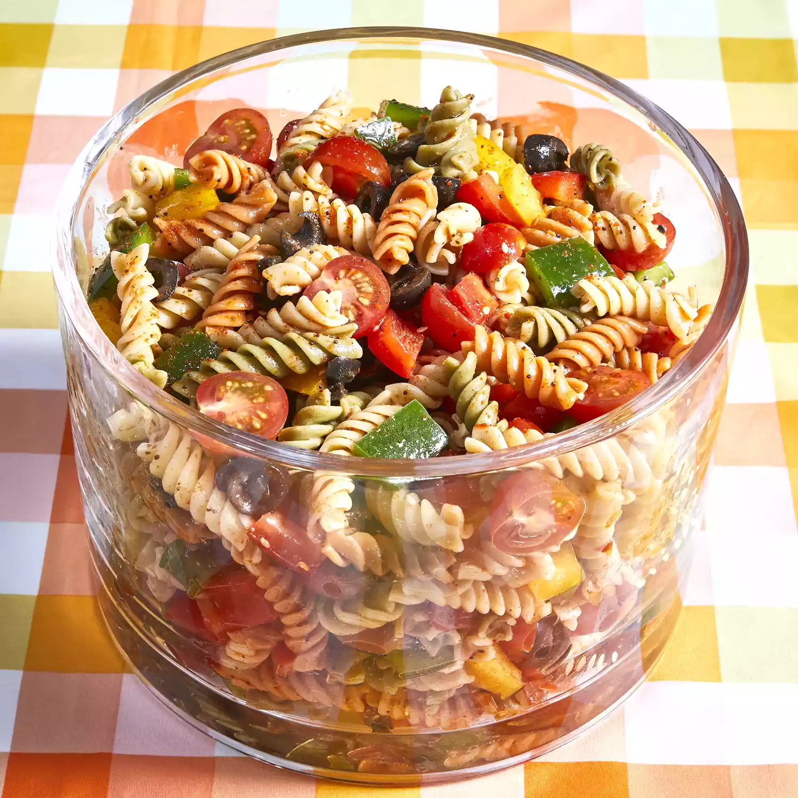

Pasta Salad

Description
Totally awesome recipe for a fresh and delicious pasta salad
Ingredients
- Pasta - 1 pound
- Cherry tomatoes - 2 cups
- Red and green bell pepper - 1 each
- Seasoning
- Italian dressing
Steps
- Bring a large pot of lightly salted water to a boil.
Cook pasta in the boiling water, stirring occasionally,
until tender yet firm to the bite, about 10 to 12 minutes;
rinse under cold water and drain.
- Whisk Italian dressing and salad spice mix together until smooth.
- Combine pasta, tomatoes, bell peppers, and olives in a salad bowl;
pour dressing over salad and toss to coat.
Refrigerate salad, 8 hours to overnight.